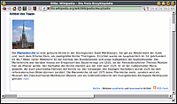
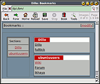

Dillo
Dieser Artikel wurde für die folgenden Ubuntu-Versionen getestet:
Ubuntu 14.04 Trusty Tahr
Zum Verständnis dieses Artikels sind folgende Seiten hilfreich:
Dillo  ist ein einfacher, minimalistischer Webbrowser mit Unterstützung für png- und jpg-Bilder sowie (teilweise) Cascading Style Sheets. Möglichkeiten für "aktive" Inhalte fehlen dagegen - sprich es gibt keine Unterstützung für Java, JavaScript oder Flash. Der Browser beherrscht tabbed-browsing, also das Öffnen mehrerer Seiten in Reitern und verfügt über eine einfache Lesezeichen-Verwaltung. Er wird aktiv weiterentwickelt, die Programmsprache ist Englisch.
ist ein einfacher, minimalistischer Webbrowser mit Unterstützung für png- und jpg-Bilder sowie (teilweise) Cascading Style Sheets. Möglichkeiten für "aktive" Inhalte fehlen dagegen - sprich es gibt keine Unterstützung für Java, JavaScript oder Flash. Der Browser beherrscht tabbed-browsing, also das Öffnen mehrerer Seiten in Reitern und verfügt über eine einfache Lesezeichen-Verwaltung. Er wird aktiv weiterentwickelt, die Programmsprache ist Englisch.
Als kleinen und schnellen Browser für einfache grafische Oberflächen kennen viele Dillo aus Distributionen wie beispielsweise Damn Small Linux.
|  |
| Wikipedia-Artikel in Dillo |
Installation¶
Ab Ubuntu 12.04 ist Dillo in den offiziellen Paketquellen enthalten. Folgendes Paket muss installiert [1] werden:
dillo (universe)
 mit apturl
mit apturl
Paketliste zum Kopieren:
sudo apt-get install dillo
sudo aptitude install dillo
Manuell¶
Wie man das Programm aus dem Quelltext kompiliert, ist im Unterartikel Dillo/Kompilieren beschrieben.
Konfiguration¶
Die globalen Einstellungen für Dillo liegen in der Datei /etc/dillo/dillorc. Um für einen Benutzer Einstellungen zu verändern, bietet sich die globale Konfiguration als Basis an und wird als ~/.dillo/dillorc kopiert [2]. Die Einstellungen sind in der Datei gut kommentiert. Standard-Einstellungen wurden dabei als Kommentare angegeben, oft ergänzt durch weitere Beispiele.
Neben Einstellungen zum Anzeigen (Rendern) der Webseiten, Darstellung, Schriftformatierung, etc. können hier die Start- und Heimat-Seite sowie die Standard-Suchmaschine festgelegt werden. Auch das Aussehen Dillos kann beeinflusst werden: so kann man beispielsweise kleine Icons ohne Text für die Werkzeugleiste benutzen, um mehr Platz für die Darstellung der Webseiten zu erhalten.
|  |
| Lesezeichen |
Bedienung¶
Die Bedienung erfolgt wie bei anderen Webbrowsern gewohnt.
Lesezeichen¶
Über das Lesezeichen-Symbol in der Werkzeugleiste öffnet sich die Lesezeichen-Seite. Über den Eintrag "modify" in der rechten oberen Ecke können die Lesezeichen verwaltet werden, wobei Gruppen in Sektionen zusammengefasst werden können. Die Lesezeichen werden unter ~/.dillo/bm.txt gesichert und können auch direkt in der Datei bearbeitet werden.
 Programmübersicht
Programmübersicht- Erstellt mit Inyoka
-
 2004 – 2017 ubuntuusers.de • Einige Rechte vorbehalten
2004 – 2017 ubuntuusers.de • Einige Rechte vorbehalten
Lizenz • Kontakt • Datenschutz • Impressum • Serverstatus -
Serverhousing gespendet von